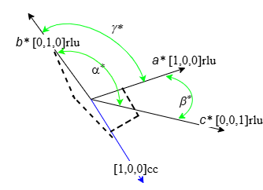
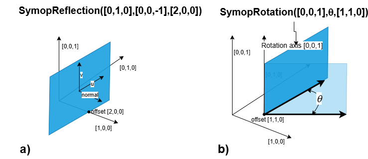
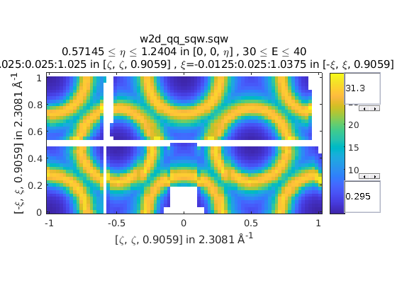
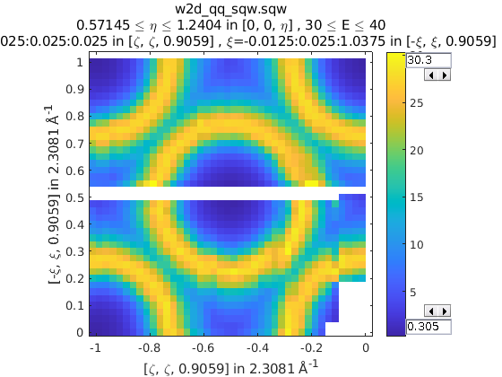
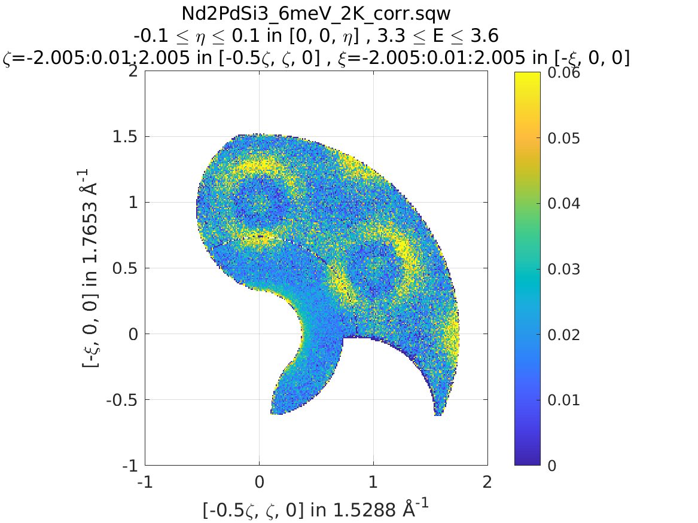
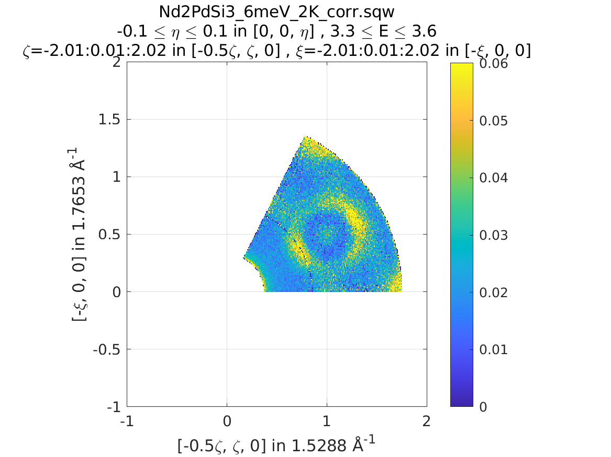
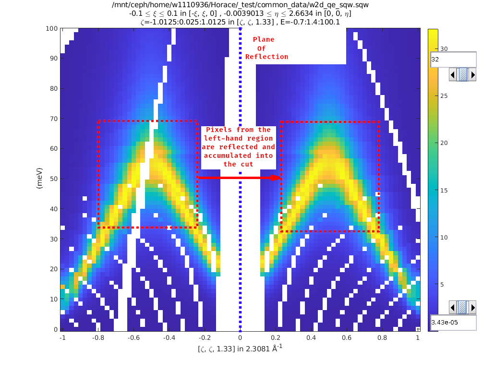
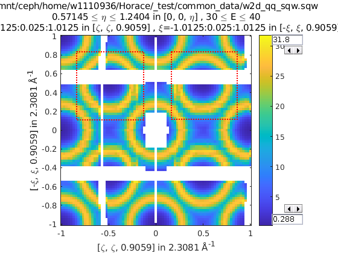
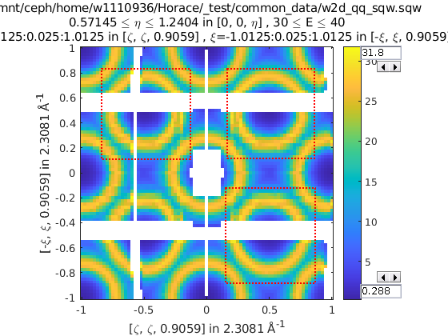
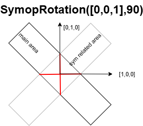

10. Symmetry Operations
10.1. Symmetry Operators
Symmetry operators or “sym op”s define the transformation between sets of
symmetry related sets. In Horace these are implemented as the Symop class,
which is subclassed to represent the three basic forms of symmetry operations:
SymopRotationA rotation about an axisSymopReflectionA reflection across a planeSymopGeneralA general matrix transform which may be the product of a series of reflections and rotations
Note
Symmetry operators are, by definition, non-scaling transformations and as
such must have a determinant of 1 (Rotation) or -1 (Reflection).
10.1.1. Rotations
Rotations are implemented as the SymopRotation class and are defined by two
3-vectors and a scalar; these are the axis of rotation, the angle (in degrees)
of rotation and the centre of the transformation (the offset). Alternatively, instead of rotation axis, you may define
rotation plane by two 3-vectors belonging to the rotation plane.
In addition, fully operational SymopRotation class
needs Busing-Levy B-matrix, used to transform momentum transfer coordinates from rlu to Crystal Cartesian
system of coordinates. Users do not need to set up this matrix in constructor as it will be transferred from an
input sqw object by every algorithm which uses symmetry operation, but if you want to test
rotation separately, you need to specify it to convert all values expressed in rlu into Crystal Cartesian. This is necessary
as the pixels available within sqw object and are subject of a symmetry transformation are always expressed in Crystal Cartesian.
Horace have simple utility \(bm = bmatrix([a,b,c],[\alpha,\beta,\gamma])\) which builds
B-matrix for Horace coordinate system using known lattice parameters,
namely \([a,b,c]\) – lengths of cell edges and \([\alpha, \beta,\gamma]\)
– angles between them.
The constructors for a SymopRotation has the following forms:
>> sym = SymopRotation([0 0 1], 60, [0 0 0]); % Rotation of 60 degrees about the Z axis
>> sym = SymopRotation([1 0 0],[0 1 0] 60, [0 0 0]); % the same but providing two vectors in rotation plane.
>> sym = SymopRotation(__,[b_matrix],["cc"|"rlu"]); % full constructor for rotation above.
Zero offset value can be omitted.
As SymopRotation is a fully serializable object, you may construct it using key-value pairs, defining SymopRotation properties
or add them in random order after some positional parameters described above have been defined.
The names of its properties are:
property |
value |
meaning |
|---|---|---|
|
3x1 vector
in |
rotation axis aka. normal to the rotation plane. Input units may
be |
|
3x1-vector |
first vector in the plane. Always |
|
3x1-vector |
second vector in the plane. Always |
|
value |
rotation angle (degrees) |
|
3x1-vector |
location of the transformation origin. Always |
|
3x3 matrix |
Busing–Levy matrix defining transformation from |
|
true or false |
defines input units of |
The key-value form of constructor would have the form:
>> sym = SymopRotation('normvec',[0 0 1],'theta_deg',60,'offset',[1 0 0]...);
>> sym = SymopRotation('u',[0 0 1],'v',[1 0 0],'theta_deg',60,...);
where you can provide key-value pairs in random order and should not mix up definition of rotation plane using normal to it with the definition which uses two in-plane vectors. (one random description will be chosen at the end).
One may notice additional parameter “cc” or “rlu” provided to the constructor and setting up the internal property input_nrmv_in_rlu
to true or false.
It is necessary and have to be provided if the lattice is non-orthogonal and you define rotation plane using normal vector to it.
Directions of axis in Crystal Cartesian and rlu (hkl) coordinate systems coincide in orthogonal coordinate system but different
in non-orthogonal. For example, the picture below shows non-orthogonal reciprocal coordinate system. If we want to do rotations in plane
\(\{[1,0,0](a^*);[0,1,0](b^*)\}\) we need to define normal to it with blue vector \([1,0,0]cc\). If you define rotation vector in
rlu, it will coincide with \([0,0,1](c^*)\) and actually defines different rotation plane.
{kind=link}

Due to difficulties in defining desired normvec in non-orthogonal coordinate system, recommended method of defining rotation axis
in non-orthogonal system would be using u,v pairs in-plane vectors.
SymopRotation also provides a convenience method for generating the
appropriate set of symmetry operations for cutting/reducing an n-Fold
rotationally symmetric dataset about an axis. This takes a scalar integer,
two 3-vectors defining the number of reductions (for an angle of 360/nFold each
time) and the axis and offset of the rotation as above. If you lattice is non-orthogonal, you should
provide the coordinate system (“cc” or “rlu”) the rotation vector is expressed in.
SymopRotation.fold(nFold, axis, offset)
>> sym = SymopRotation.fold(4, [0 0 1], [0 0 0]) % Ready to cut from a 4-fold rotationally symmetric dataset about Z
sym =
4x1 cell array
{1x1 SymopIdentity}
{1x1 SymopRotation}
{1x1 SymopRotation}
{1x1 SymopRotation}
>> celldisp(sym)
celldisp(sym)
sym{1} =
Identity operator (no symmetrisation)
sym{2} =
Rotation operator:
axis (cc): [0;0;1]; offset(rlu): [0;0;0]; angle(deg): 90.00;
In-plane u(rlu): [1;0;0]; In-plane v(rlu): [0;1;0];
sym{3} =
Rotation operator:
axis (cc): [0;0;1]; offset(rlu): [0;0;0]; angle(deg): 180.00;
In-plane u(rlu): [1;0;0]; In-plane v(rlu): [0;1;0];
sym{4} =
Rotation operator:
axis (cc): [0;0;1]; offset(rlu): [0;0;0]; angle(deg): 270.00;
In-plane u(rlu): [1;0;0]; In-plane v(rlu): [0;1;0];
10.1.2. Reflections
Reflections are implemented as the SymopReflection class. As in the rotation, the
reflection plane can be defined using two vectors in this plane or the normal vector to the plane.
You also need a vector which defines a point the plane passes through (the offset). Similarly to Rotation, you may add
B-matrix to the list of arguments but this will be done by symop algorithms anyway.
The constructor for SymopReflection for two vectors in plane is as follows:
>> sym = SymopReflection([1 0 0], [0 1 0]); % Reflection across the XY axis with 0 offset
>> sym = SymopReflection([1 0 0], [0 1 0], [1 0 0]); % Reflection across the XY axis with offset
>> sym = SymopReflection(__,b_matrix);
>> sym = SymopReflection('u',[1 0 0],'v',[0 1 0],'offset',[0 0 0]); % Reflection across the XY axis
The form of the constructor above is historical and was used in Horace-3 as well. Unfortunately it is impossible to distinguish
between SymopReflection without offset provided and SymopReflection with offset and rotation plane defined by
normal vector to it. Because of that, if you want to define
reflection plane using normal vector to it, you have to use key-value pairs constructor:
>> sym = SymopReflection('normvec',[0,0,1],'offset',[0 1 0],["rlu"|"CC"]); % Reflection across the XY axis
>> sym = SymopReflection(__,'b_matrix',b_matrix_value); %
The list of properties, available to SymopReflection is the same as for SymopRotation except theta_deg
is naturally not available.
Note
For any Symop constructor the offset can be omitted and it will default
to [0 0 0]. In this case, B-matrix, if necessary, should be provided as key-value pair:
b_matrix,value
As with SymopRotation u-v vectors based constructor is recommended for usage when your lattice is non-orthogonal.
Cutting with SymopReflection and Symmetrising (see below) use this transformation for reflecting
data from the half of the space separated by reflection plane into another half of the space. The target half-space
is the area where the vector, built on the vectors, defining reflection plane according to right-hand rule is positive.
10.1.3. General Transformations
Generalised matrix transforms are implemented as the SymopGeneral class and
are defined by a 3x3 matrix and a 3-vector. These are the transform itself and
the offset. The constructor for a SymopGeneral is as follows:
SymopGeneral(matrix, offset)
>> sym = SymopGeneral([0 1 0
1 0 0
0 0 1], [0 0 0]); % Reflection across y=x
Warning
The matrix defining a SymopGeneral must have a determinant of 1 or
-1 or else this will result in an error.
It should be noted that it is possible to get the general transformation from
any of the other transformation types by applying the transform to the identity
(for which R is a convenience property), though this does not consider
offsets.
>> sym = SymopRotation([0 1 0], 90, [0 0 0]);
>> sym.R
ans =
0.0000 0 1.0000
0 1.0000 0
-1.0000 0 0.0000
>> sym.transform_vec(eye(3))
ans =
0.0000 0 1.0000
0 1.0000 0
-1.0000 0 0.0000
All Crystal lattice related symmetry transformations may be described by specially constructed 3x3 transformation matrices, available on the web. Horace accesses these transformations by accessing Python library available at https://github.com/spglib/spglib using get_syms utility which interfaces this library (has to be installed for MATLAB’s Python separately) and returns set of general transformations, provided by the library for given lattice given symmetry type of this lattice.
10.1.4. Groups of symmetry operators
For a more complex transformation involving a series of rotations and reflections applied to single area of space, it is possible to construct an array of transformations to be applied in sequence (as a series of pre-multiplications, i.e. applied in the reverse order of the list).
% Rotate 90 deg about X, Reflect across X, Rotate back 90 deg about X
big_sym = [SymopRotation([1 0 0], 90), SymopReflection([0 1 0], [0 0 1]), SymopRotation([1 0 0], -90)];
Note
The group of symmetry operations can have only one offset. You may provide it with only one symmetry in the group,
but code will propagate it to all group’s transformations. For example, the expression: [SymopRotation([1 0 0], 90,[1,0,0]), SymopReflection([0 1 0], [0 0 1])] is equivalent to: [SymopRotation([1 0 0], 90,[1,0,0]), SymopReflection([0 1 0], [0 0 1],[1,0,0])], Attempt to give different offsets to different operations,
e.g. [SymopRotation([1 0 0], 90,[1,0,0]), SymopReflection([0 1 0], [0 0 1],[0,1,0])]; will fail.
Use cellarray of symmetry transformations to allow different offsets and apply symmetries to different areas of the object.
10.1.5. Irreducible region
Symop transformations on pixels take what we call the irreducible region
into account when transforming. The irreducible region exists to ensure that
symmetry reductions reduce the data, rather than mapping the data across the
symmetry transformation.
Warning
This is currently only defined for SymopReflection and SymopRotation
(which is why SymopGeneral is not currently permitted for symmetric
reductions).
The irreducible region for SymopReflection is defined as the the positive
half-volume with respect to the normal vector of the plane of
reflection. Mathematically this is defined as:
where \(Q\) is the set of coordinates to be transformed and \(\vec{u}\) and \(\vec{v}\) are the vectors defining the plane of reflection.
The irreducible region for SymopRotation is defined as the wedge bounded in
the upper-right (positive) quadrant in the q-coordinate space by the planes
defined by the absolute (relative to the q-coordinates) x-axis and the axis of
rotation; and the transformed x-axis and the axis of rotation.
Note
In the special case of rotation about the x-axis, the y-axis is used to define the wedge instead of the x-axis.
Mathematically, this is defined as:
where \(Q\) is the set of coordinates to be transformed, \(\vec{n}\) is the axis of rotation, \(\vec{u}\) is the x- (or y-) axis (as above) and \(\vec{v}\) is the transformed \(\vec{u}\).
Note
For an angle > 90 degrees or folds < 4, this will cover the positive quadrant and some of a negative domain.
Examples of irreducible zones for SymopReflection and SymopRotation are presented on the picture below:
{kind=link}

10.2. Commands for cuts and slices
In Horace it is possible to symmetrise by 3 methods:
symmetrise whole S(Q, \(\omega{}\)) objects using
symmetrise_sqwsymmetrise and extract subsets of S(Q, \(\omega{}\)) objects using
cutequivalently to
cutwith symmetry, it is possible to usesymmetrise_sqwand thencut
Note
While symmetrise_sqw then cut is possible, it is not recommended
unless the intermediate symmetrised S(Q, \(\omega{}\)) is required. This approach has the
overhead of transforming all pixels in S(Q, \(\omega{}\)), while cut has optimisations
to transform only those that might contribute to the result.
Warning
Symmetrisation maps the pixels outside the irreducible region into their
respective symmetry related sites. This means that subsequent binning/cutting
of the sqw object will see these pixels as being on the symmetry related
site rather than their original location.
Symmetrising an S(Q, \(\omega{}\)) is an irreversible operation and overwriting saved
.sqw files may lead to loss of information.
10.3. Symmetrising
10.3.1. symmetrise_sqw
It is possible to reduce an entire dataset at once by symmetry, transforming all
pixels according to the symmetry operations and accumulating the transformed
pixels into the bins appropriately. This is done through the symmetrise_sqw
function, the signature for which is below:
Warning
Due to restrictions related to the irreducible region, symmetrise_sqw is
only defined for SymopReflection and SymopRotation and NOT for
SymopGeneral.
>> w1 = sqw(data);
{kind=link}
>> sym = SymopReflection([0 0 1], [1 1 0]); % Reflect about X-axis
>> w2 = symmetrise_sqw(w1, sym);
{kind=link}

We can also combine symmetry operations:
sym = SymopReflection([0 0 1], [1 1 0]);
sym2 = SymopReflection([0 0 1], [-1 1 0]);
sym_comb = [sym, sym2];
w2 = symmetrise_sqw(wa, sym_comb);
{kind=link}

It is also possible to reduce data through a rotationally symmetric operation:
% Perform a 6-fold rotational reduction about Z
% The resulting wedge with be a 60 degree segment
>> w1 = sqw(data);
A SymopRotation maps pixels into the Irreducible region)
{kind=link}

>> sym = SymopRotation([0 0 1], 60);
>> w2 = symmetrise_sqw(w1, sym);
{kind=link}

Note
Equally we could have folded the data through:
>> sym = SymopRotation.fold(6, [0 0 1]); % Same as above
>> w3 = symmetrise_sqw(w1, sym);
And they would be equivalent
>> equal_to_tol(w2, w3);
ans =
logical
1
10.3.2. gen_sqw
If you need to symmetrise a large sqw object, it can also be done during
sqw generation, i.e. during generation of the sqw file, rather than
after the object has been created. The gen_sqw function has a special option
transform_sqw which can be used with any method, transforming an S(Q, \(\omega{}\)) at
generation time.
For example:
sym = SymopReflection(v1, v2, offset);
gen_sqw (spefile, par_file, sym_sqw_file, efix, emode, alatt, angdeg,... u, v, psi, omega, dpsi, gl,
gs, 'transform_sqw', @(x)(symmetrise_sqw(x,sym)))
or, more generally:
gen_sqw (spefile, par_file, sym_sqw_file, efix, emode, alatt, angdeg,... u, v, psi, omega, dpsi, gl,
gs, 'transform_sqw', @user_symmetrisation_routine)
where spefile, par_file, etc… are the options used during initial
sqw file generation (see Generating SQW files). The first gen_sqw
would build a .sqw file reflected as in the example for the reflection
above. In the second, more general, case the user defined function (in a
.m-file on the Matlab path) can define multiple symmetrisation operations
that are applied sequentially to the entire data. An example is as follows,
which folds a cubic system so that all eight of the symmetrically equivalent
regions are folded onto each other:
function wout = user_symmetrisation_routine(win)
%fold about line (1,1,0) in HK plane
wout = symmetrise_sqw(win, SymopReflection([1,1,0], [0,0,1]));
%fold about line (-1,1,0) in HK plane
wout = symmetrise_sqw(wout,SymopReflection([-1,1,0],[0,0,1]));
%fold about line (1,0,1) in HL plane
wout = symmetrise_sqw(wout,SymopReflection([1,0,1], [0,1,0]));
%fold about line (1,0,-1) in HL plane
wout = symmetrise_sqw(wout,SymopReflection([1,0,-1],[0,1,0]));
end
Warning
When defining the function to apply the symmetrisation (as above) one can
only use symmetry operations supported by symmetrise_sqw. Any other
transformations may modify the data ranges in unexpected ways, making the
resulting transformed sqw file into complete nonsense!
Note
Due to a quirk in MATLAB’s function loading, in order to work with parallel Horace (c.f. Running Horace in Parallel) it is necessary that the symmetrisation function is in the same folder as the generation script.
if isempty(which('my_additional_user_routine'))
addpath('/home/myFedID/path_to_my_additional_user_routine');
end
Alternatively with an array of Symop objects this could be done in one step
as:
sym = [SymopReflection([1,1,0], [0,0,1])
SymopReflection([-1,1,0],[0,0,1])
SymopReflection([1,0,1], [0,1,0])
SymopReflection([1,0,-1],[0,1,0])];
gen_sqw (spefile, par_file, sym_sqw_file, efix, emode, alatt, angdeg,... u, v, psi, omega, dpsi, gl,
gs, 'transform_sqw', @(x)(symmetrise_sqw(x,sym)))
10.4. Cutting
In order to do a symmetrised cut, the ordinary cut function (see
cut)
is used with the appropriate symmetry operations additionally passed into the
function as an argument after the bin axes specification (see example
below). The cut operation will then use the symmetry operations to compute
the transformations of the given projection, accumulate the
symmetrically-related pixels into the primary binning axes (the cut region
specified in the cut operation) and transform their pixel coordinates
according to the symmetry operations as though the S(Q, \(\omega{}\)) had been symmetrised.
>> w1 = sqw(data);
% Take 2D cut from w1
>> sym = SymopReflection([0 1 0], [0 0 1]);
>> w3 = cut(w1, ortho_proj([1 0 0], [0 1 0]), [0.2 0.1 0.8], [32 2 70], [-inf inf], [-inf inf], sym)
{kind=link}

Representation of w3’s cut. The primary axes are within the
rectangle specified by the two corners (0.2,32) and (0.8, 70). The reflection
about the Y-axis captures the data in the region between (-0.2, 32) and
(-0.8, 70) which are transformed by the symmetry operation into the primary
axes and accumulated into the cut.
w = sqw(...)
wout = cut(w, ...);
{kind=link}
% 2 cuts (identity always included), 2 quadrants
sym = {SymopReflection([1 1 0], [0 0 1])}
wout = cut(w, ...);
{kind=link}

% 3 cuts, 3 quadrants
sym = {SymopReflection([1 1 0], [0 0 1]), ...
SymopReflection([-1 1 0], [0 0 1])}
w_out = cut(w, ..., sym)
{kind=link}

% Cut all 4 quadrants and combine
sym = {SymopReflection([1 1 0], [0 0 1]), ...
SymopReflection([-1 1 0], [0 0 1]), ...
[SymopReflection([1 1 0], [0 0 1]), ...
SymopReflection([-1 1 0], [0 0 1])]}
w_out = cut(w, ..., sym)
{kind=link}
Note
By design, you may apply only single symmetry transformation to pixels within a cut. Its done intentionally, to avoid double counting and wrong statistics in cases like the image below, where you cut with SymopRotation by 90deg with a command like: w2 = cut(an_sqw,line_proj([-1,1,0],[-1,-1,0]),[-2,0.01,2],[-0.2.0.01,0.2],[],[],SymopRotation([0,0,1],90) and do not want to count pixels contributed into red-crossed area twice.
{kind=link}

The consequence of this feature is that you can not make cut which will do two transformations on the same pixels. E.g. If you need this, you have to perform two cuts or build your own generic transformation with symmetry, as described in Generic Transformations.
10.5. Combining
wout=combine_sqw(win)
Combine two sqw objects (w1 and w2) of the same dimensionality into
a single sqw object in order to improve statistics.
Note
The output object will have a combined value for the integration range e.g. combining two 2d slices taken at L=1 and L=2 will result in an output for which the stated value of L is L=1.5.
Note
Two objects which use different projection axes can be combined. The output
object will have the projection axes of w1.
10.6. Rebinning
Resize the bin boundaries along one or more axes, and rebin the data accordingly. There are several possibilities for the input format:
wout = rebin_sqw(win,step1,step2,...)
Rebin the sqw object win with bins along the first axis that have width
step1, bins along the second axis (if there is one) with width step2,
and so on. The original limits of the axes will be retained. To leave an axis
unaltered, the corresponding step argument can be set to 0.
wout = rebin_sqw(win,[lo1,step1,hi1],[lo2,step2,hi2],...)
As above, but specifying new upper and lower limits along each of the axes to be rebinned.
wout = rebin_sqw(win,w2)
Rebin the sqw object win with the boundaries (and projection axes) of the
template object w2.
10.7. Symmetrise data, then unfold back to original range
Warning
For producing plots only, any analysis on these results will be invalid due to multiple counting of data.
Below we show a script that uses the symmetrise_sqw and combine_sqw
commands to reduce a dataset and then unfold it. In the example we have a
constant energy slice in the (h,k)-plane which we reduce twice to obtain the
positive quadrant. We then reflect the result in the opposite direction and
combine with the positive quadrant, then reflect this and combine. This produces
an image which covers all four quadrants of the original with the reduced
dataset (thereby increasing the counts four-fold).
%The original data
proj2 = ortho_proj([1,0,0], [0,1,0]);
hkplane = cut_sqw(sqw_file,proj2,[-2,0.05,2],[-2,0.05,2],[-0.05,0.05],[13,16]);
plot(smooth(d2d(hkplane)));
%Fold twice to get into a quadrant. Note order of vectors
sym = [SymopReflection([0,0,1],[0,1,0])
SymopReflection([1,0,0],[0,0,1])];
fold2 = symmetrise_sqw(hkplane,sym);
%Check the result
plot(smooth(d2d(fold2)));
%Fold this back again (reverse order of vectors in first fold)
sym = SymopReflection([0,1,0],[0,0,1]);
fold2a = symmetrise_sqw(fold2,sym);
plot(smooth(d2d(fold2a)))
%Combine with what you started with
combi1 = combine_sqw(fold2,fold2a);
plot(smooth(d2d(combi1)));
%Fold back again (reverse order of vectors in second fold)
sym = SymopReflection([0,0,1],[1,0,0]);
fold3a = symmetrise_sqw(combi1, sym);
plot(fold3a)
%Combine and plot
combi2 = combine_sqw(combi1,fold3a);
plot(smooth(d2d(combi2)));
10.8. Limitations
At present
symmetrise_sqw,combine_sqw, andrebin_sqwwork ONLY for sqw objects, since they require access to individual detector pixel information. The functions will work for any dimensionality of object, however.As described above,
cutwith symmetry operations can apply only one symmetry transformations to pixels within a symmetry-related area. Pixels from overlapping parts of symmetry related areas are transformed only once. Secondary symmetry transformations over the same pixels have to be performed by anothercutwith symmetries, or by writing a generic transformation.
10.9. Symop Methods - Advanced
Symop objects have methods to transform a variety of objects which
may be related by symmetry. These are:
transform_vectransform_pixtransform_proj
Which transform numeric vectors, PixelDataBase objects and aProjection
objects respectively.
10.9.1. transform_vec
transform_vec takes a 3xN list of 3-vectors to transform. This method can be
applied directly from a single Symop or from an array (but not cell array)
of Symop objects (see: Groups of symmetry operators).
>> sym = SymopReflection([1 0 0], [0 1 0])
sym =
Reflection operator:
In-plane u(rlu): [1;0;0]; In-plane v(rlu): [0;1;0]
offset(rlu): [0;0;0]; normvec (rlu): [0;0;1]
>> sym.transform_vec([3; 6; 1])
ans =
3
6
-1
>> big_sym = [SymopRotation([1 0 0], 90), SymopReflection([0 1 0], [0 0 1]), SymopRotation([1 0 0], -90)];
%v1|v2|v3|v4|v5
>> big_sym.transform_vec([1, 3, 5, 1, 3
2, 2, 4, 6, 1
6, 3, 1, 3, 6])
ans =
%v1'| v2'| v3'| v4'| v5'
-1 -3 -5 -1 -3
2 2 4 6 1
6 3 1 3 6
10.9.2. transform_pix
transform_pix takes a PixelDataBase derived object and transforms the
contained pixel q-coordinates according to the symmetry operations and returns a
new object with the transformed pixels.
Note
transform_pix takes the Symop object’s Irreducible region into
account and does not transform the pixels which are considered to be within
the irreducible region.
>> sym = SymopReflection([1 0 0], [0 1 0]);
% 5 pixels in memory
>> pix = PixelDataMemory(rand(9, 5));
% Put pixels outside of "positive quadrant"
>> pix.q_coordinates(:, [1 2]) = -pix.q_coordinates(:, [1 2]);
>> pix_new = sym.transform_pix(pix);
>> pix.data
ans =
-0.4898 -0.1190 0.6991 0.8143 0.8308 % q_x
-0.4456 -0.4984 0.8909 0.2435 0.5853 % q_y
-0.6463 -0.9597 0.9593 0.9293 0.5497 % q_z
0.7094 0.3404 0.5472 0.3500 0.9172 % dE
0.7547 0.5853 0.1386 0.1966 0.2858 % run_idx
0.2760 0.2238 0.1493 0.2511 0.7572 % detector_idx
0.6797 0.7513 0.2575 0.6160 0.7537 % energy_idx
0.6551 0.2551 0.8407 0.4733 0.3804 % signal
0.1626 0.5060 0.2543 0.3517 0.5678 % variance
>> pix_new.data
ans =
-0.4898 -0.1190 0.6991 0.8143 0.8308 % q_x
-0.4456 -0.4984 0.8909 0.2435 0.5853 % q_y
0.6463 0.9597 0.9593 0.9293 0.5497 % q_z
0.7094 0.3404 0.5472 0.3500 0.9172 % dE
0.7547 0.5853 0.1386 0.1966 0.2858 % run_idx
0.2760 0.2238 0.1493 0.2511 0.7572 % detector_idx
0.6797 0.7513 0.2575 0.6160 0.7537 % energy_idx
0.6551 0.2551 0.8407 0.4733 0.3804 % signal
0.1626 0.5060 0.2543 0.3517 0.5678 % variance
10.9.3. transform_proj
transform_proj is used to transform subclasses of the LineProjBase
type and check and modify input symmetry operations into the form, corresponding to this projection,
including setting up B-matrix used for correct offset-s interpretation.
It is an internal function which creates a new line_proj with the
symmetries applied and is not normally needed by users, but is recorded here for
completeness.